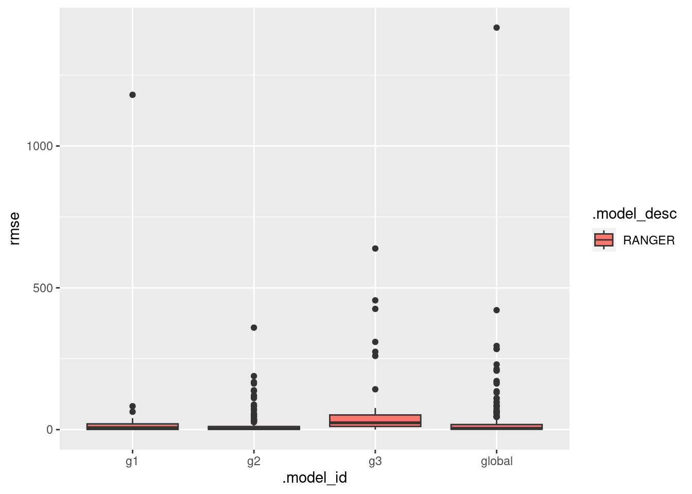

library(tidyverse)
library(arrow)
library(tidymodels)
library(bonsai)
library(finetune)
library(modeltime)
library(timetk)
library(dtwclust)
library(kableExtra)
library(tictoc)Global and subset models
Reference: https://blog.bguarisma.com/series/time-series-forecasting
Packages
Load data
And remove rows with NAs
tdengue <- read_parquet(file = "tdengue.parquet") %>%
drop_na() %>%
select(mun, date, starts_with("cases"))Clustering
Prepare data
cdengue <- tdengue %>%
select(mun, date, cases) %>%
mutate(mun = paste0("m_", mun)) %>%
arrange(mun, date) %>%
pivot_wider(names_from = mun, values_from = cases) %>%
select(-date) %>%
t() %>%
tslist()SBD method
k_seq <- 3:8
tic()
clust <- tsclust(
series = cdengue,
type = "partitional",
k = k_seq,
distance = "sbd",
seed = 123
)
toc()0.251 sec elapsedCluster Validity Indices (CVI)
names(clust) <- paste0("k_", k_seq)
res_cvi <- sapply(clust, cvi, type = "internal") %>%
t() %>%
as_tibble(rownames = "k") %>%
arrange(-Sil)
res_cvi %>%
kbl() %>%
kable_styling()| k | Sil | SF | CH | DB | DBstar | D | COP |
|---|---|---|---|---|---|---|---|
| k_3 | 0.1913461 | 0.3684628 | 70.22859 | 1.714735 | 2.044420 | 0.0566428 | 0.3474689 |
| k_8 | 0.1490014 | 0.1126179 | 30.37884 | 2.410194 | 3.822109 | 0.0596007 | 0.3032652 |
| k_7 | 0.1470096 | 0.1565806 | 29.04192 | 2.905818 | 3.418153 | 0.0670860 | 0.3176370 |
| k_4 | 0.1200358 | 0.2998345 | 49.88156 | 2.833579 | 3.414727 | 0.0627945 | 0.3318179 |
| k_6 | 0.1012948 | 0.1848656 | 42.58699 | 2.812613 | 4.260553 | 0.0384893 | 0.3013105 |
| k_5 | 0.0514986 | 0.2966023 | 43.87629 | 4.495300 | 6.564451 | 0.0322457 | 0.3248770 |
Select cluster with higher Silhouette statistic
sel_clust <- clust[[res_cvi[[1,1]]]]
plot(sel_clust)Identify municipalities and cluster id
cluster_ids <- tibble(
mun = names(cdengue) %>% substr(3, 9),
group = as.character(sel_clust@cluster)
) Add partition information to dataset
tdengue <- left_join(tdengue, cluster_ids, by = "mun")Train and test split
tdengue_split <- tdengue %>%
time_series_split(
date_var = date,
assess = 54*2,
cumulative = TRUE
)Data is not ordered by the 'date_var'. Resamples will be arranged by `date`.Overlapping Timestamps Detected. Processing overlapping time series together using sliding windows.K-folds
tdengue_split_folds <- training(tdengue_split) %>%
vfold_cv(v = 10)Recipes
recipes_list <- list()Global
Using data from all municipalities.
recipe_global <- recipe(cases ~ ., data = training(tdengue_split)) %>%
step_rm(date, group) %>%
update_role(mun, new_role = "id variable")
recipes_list <- append(recipes_list, list(global = recipe_global))
rm(recipe_global)Groups
One recipe for each group, with data only from the group.
for(g in unique(tdengue$group)){
tmp <- recipe(cases ~ ., data = training(tdengue_split)) %>%
step_filter(group == !!g) %>%
step_rm(date, group) %>%
update_role(mun, new_role = "id variable")
tmp <- list(tmp)
tmp <- setNames(tmp, paste0("g", g))
recipes_list <- append(recipes_list, tmp)
rm(tmp)
}Models specification
Random forest
rf_spec <- rand_forest(
# trees = tune(),
# min_n = tune()
) %>%
set_engine("ranger") %>%
set_mode("regression")LightGBM
lgbm_spec <- boost_tree() %>%
set_engine("lightgbm") %>%
set_mode("regression")Workflow set
all_workflows <- workflow_set(
preproc = recipes_list,
models = list(rf = rf_spec),
cross = TRUE
)Tune
doParallel::registerDoParallel()
tic()
race_results <-
all_workflows %>%
workflow_map(
"tune_race_anova",
seed = 345,
resamples = tdengue_split_folds,
grid = 10,
control = control_race(parallel_over = "everything"),
verbose = TRUE
)i No tuning parameters. `fit_resamples()` will be attemptedi 1 of 4 resampling: global_rf 1 of 4 resampling: global_rf (4m 46.5s)i No tuning parameters. `fit_resamples()` will be attemptedi 2 of 4 resampling: g3_rf 2 of 4 resampling: g3_rf (23.4s)i No tuning parameters. `fit_resamples()` will be attemptedi 3 of 4 resampling: g1_rf 3 of 4 resampling: g1_rf (23.8s)i No tuning parameters. `fit_resamples()` will be attemptedi 4 of 4 resampling: g2_rf 4 of 4 resampling: g2_rf (3m 15.7s)toc()530.097 sec elapsedFit
For combination of each municipality, model and recipe.
trained_models <- list()
for(w in unique(race_results$wflow_id)){
best_tune <- race_results %>%
extract_workflow_set_result(w) %>%
select_best("rmse")
final_fit <- race_results %>%
extract_workflow(w) %>%
finalize_workflow(best_tune) %>%
fit(training(tdengue_split))
mold <- extract_mold(final_fit)
train_ids <- mold$extras$roles$`id variable` %>%
distinct() %>%
pull() %>%
as.character()
final_fit <- list(
list(
"final_fit" = final_fit,
"train_ids" = train_ids
)
)
final_fit <- setNames(final_fit, paste0(w))
trained_models <- append(trained_models, final_fit)
}models_accuracy <- tibble()
for(t in 1:length(trained_models)){
model_tbl <- modeltime_table(trained_models[[t]][[1]])
testing_set <- testing(tdengue_split) %>%
filter(mun %in% trained_models[[t]][[2]])
calib_tbl <- model_tbl %>%
modeltime_calibrate(
new_data = testing_set,
id = "mun"
)
res <- calib_tbl %>%
modeltime_accuracy(
acc_by_id = TRUE,
metric_set = metric_set(rmse)
)
res$.model_id <- word(names(trained_models[t]), 1, sep = "_")
models_accuracy <- bind_rows(models_accuracy, res)
}ggplot(data = models_accuracy, aes(x = .model_id, y = rmse, fill = .model_desc)) +
geom_boxplot()
Session info
sessionInfo()R version 4.1.2 (2021-11-01)
Platform: x86_64-pc-linux-gnu (64-bit)
Running under: Ubuntu 22.04.2 LTS
Matrix products: default
BLAS: /usr/lib/x86_64-linux-gnu/blas/libblas.so.3.10.0
LAPACK: /usr/lib/x86_64-linux-gnu/lapack/liblapack.so.3.10.0
Random number generation:
RNG: L'Ecuyer-CMRG
Normal: Inversion
Sample: Rejection
locale:
[1] LC_CTYPE=pt_BR.UTF-8 LC_NUMERIC=C
[3] LC_TIME=en_US.UTF-8 LC_COLLATE=en_US.UTF-8
[5] LC_MONETARY=en_US.UTF-8 LC_MESSAGES=en_US.UTF-8
[7] LC_PAPER=en_US.UTF-8 LC_NAME=C
[9] LC_ADDRESS=C LC_TELEPHONE=C
[11] LC_MEASUREMENT=en_US.UTF-8 LC_IDENTIFICATION=C
attached base packages:
[1] stats graphics grDevices utils datasets methods base
other attached packages:
[1] ranger_0.15.1 tictoc_1.2 kableExtra_1.3.4 dtwclust_5.5.12
[5] dtw_1.23-1 proxy_0.4-27 timetk_2.8.3 modeltime_1.2.7
[9] finetune_1.1.0 bonsai_0.2.1 yardstick_1.2.0 workflowsets_1.0.1
[13] workflows_1.1.3 tune_1.1.1 rsample_1.1.1 recipes_1.0.6
[17] parsnip_1.1.0 modeldata_1.1.0 infer_1.0.4 dials_1.2.0
[21] scales_1.2.1 broom_1.0.5 tidymodels_1.1.0 arrow_12.0.1
[25] lubridate_1.9.2 forcats_1.0.0 stringr_1.5.0 dplyr_1.1.2
[29] purrr_1.0.1 readr_2.1.4 tidyr_1.3.0 tibble_3.2.1
[33] ggplot2_3.4.2 tidyverse_2.0.0
loaded via a namespace (and not attached):
[1] backports_1.4.1 systemfonts_1.0.4 plyr_1.8.8
[4] splines_4.1.2 listenv_0.9.0 digest_0.6.32
[7] foreach_1.5.2 htmltools_0.5.5 fansi_1.0.4
[10] magrittr_2.0.3 cluster_2.1.2 doParallel_1.0.17
[13] tzdb_0.4.0 globals_0.16.2 gower_1.0.1
[16] RcppParallel_5.1.7 xts_0.13.1 svglite_2.1.1
[19] hardhat_1.3.0 timechange_0.2.0 prettyunits_1.1.1
[22] colorspace_2.1-0 rvest_1.0.3 ggrepel_0.9.3
[25] xfun_0.39 jsonlite_1.8.7 survival_3.2-13
[28] zoo_1.8-12 iterators_1.0.14 glue_1.6.2
[31] gtable_0.3.3 ipred_0.9-14 webshot_0.5.5
[34] future.apply_1.11.0 Rcpp_1.0.10 viridisLite_0.4.2
[37] xtable_1.8-4 clue_0.3-64 GPfit_1.0-8
[40] bit_4.0.5 stats4_4.1.2 lava_1.7.2.1
[43] StanHeaders_2.26.27 prodlim_2023.03.31 htmlwidgets_1.6.2
[46] httr_1.4.6 modeltools_0.2-23 ellipsis_0.3.2
[49] pkgconfig_2.0.3 farver_2.1.1 nnet_7.3-17
[52] utf8_1.2.3 tidyselect_1.2.0 labeling_0.4.2
[55] rlang_1.1.1 DiceDesign_1.9 reshape2_1.4.4
[58] later_1.3.1 munsell_0.5.0 tools_4.1.2
[61] cli_3.6.1 generics_0.1.3 evaluate_0.21
[64] fastmap_1.1.1 yaml_2.3.7 knitr_1.43
[67] bit64_4.0.5 future_1.33.0 mime_0.12
[70] xml2_1.3.4 flexclust_1.4-1 compiler_4.1.2
[73] rstudioapi_0.14 lhs_1.1.6 stringi_1.7.12
[76] highr_0.10 RSpectra_0.16-1 lattice_0.20-45
[79] Matrix_1.5-4.1 shinyjs_2.1.0 vctrs_0.6.3
[82] pillar_1.9.0 lifecycle_1.0.3 furrr_0.3.1
[85] data.table_1.14.8 httpuv_1.6.11 R6_2.5.1
[88] promises_1.2.0.1 parallelly_1.36.0 codetools_0.2-18
[91] MASS_7.3-55 assertthat_0.2.1 withr_2.5.0
[94] parallel_4.1.2 hms_1.1.3 grid_4.1.2
[97] rpart_4.1.16 timeDate_4022.108 class_7.3-20
[100] rmarkdown_2.23 shiny_1.7.4